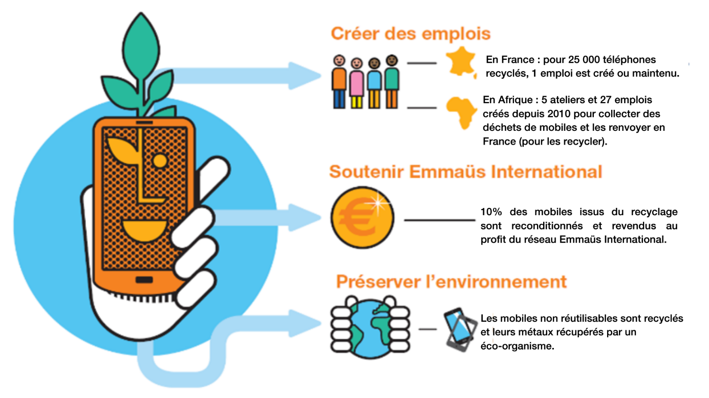

Le programme Green-Act et favoriser une économie responsable
2
-
data center verts
-
50%
-
des routeurs récupérés sont reconditionnés et réutilisés
-
46%
-
des bureaux certifiés ISO 14001
16%
d'énergie verte dans notre consommation
Orange est classé dans le top 1% des entreprises écoresponsables par EcoVadis
Télétravail :
crise sanitaire a montré l’importance du télétravail et de ses effets positifs à grande échelle. Le télétravail a donc permis de réduire fortement les gaz à effet de serre émis par les transports.
Collaboration à distance :
L'utilisation d’outils collaboratif comme les visio ou web conférence ont fait prendre conscience que certains déplacements peuvent parfois être évités.
Objets connectés
- réduire la consommation d'eau ou de produits chimiques dans l'agriculture
- optimiser le trafic ou le stationnement dans les grandes villes
- optimiser le trafic ou le stationnement dans les grandes villes
Le Programme Re : Reprise, Recyclage, Reconditionnement
De la reprise au Recyclage des mobiles
Orange propose un service de reprise des télephones pour tous ses clients entreprises, et offre en contrepartie une compensation financière, directement retirée de la facture mobile entreprise du client. Les trois objectifs principaux sont :
- permettre au client d’engager ou de valoriser une politique RSE,
- simplifier la gestion de leurs flotte mobile grâce à la traçabilité des téléphones, l'automatisation et la simplification du process,
- tirer profit de la valorisation de ces télephones.
Des partenaires engagés dans l’économie circulaire :
Orange reprend tous les téléphones quelque soit leur état. Si le produit possède encore de la valeur, alors il est réparé puis revendu. Si le produit n’a plus aucune valeur, il est recyclé, créant ainsi de l’emploi.
Des téléphones reconditionnés :
Dans le cadre de l’économie circulaire, les téléphones repris par Orange sont reconditionnés pour un nouvel usage. D’ici 2025, Orange souhaite que 10% des téléphones vendus soient des téléphones reconditionnés.
Un moyen de renouveler sa flotte avec une démarche RSE :
La reprise des anciens terminaux permet à la fois de valoriser les produits et de faire des économies sur la facture mensuelle. Orange propose aussi une offre Mobile Leasing qui permet d’économiser pour la location de téléphone. La location de télephones permet aux clients de toujours disposer d’appareils toujours performants et rend la gestion de flotte plus éco-responsable.